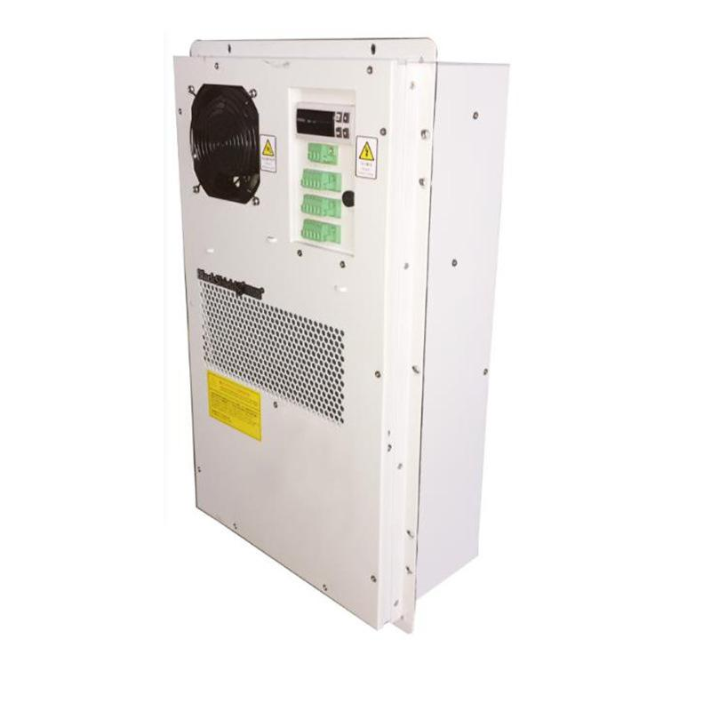

名称：黑盾机柜空调
异常报警代码及故障描述：
| 报警代码 | 故障描述 | 报警代码 | 故障描述 |
| CS | 温度传感器故障 | CF | 压缩机故障 |
| HC | 柜内高温或低温报警 | HF | 加热器故障 |
| HP | 制冷系统高压报警 | LP | 制冷系统低压报警 |
常见故障分析处理：
| 故障描述 | 原因分析 | 解决方法 |
| 温度传感器故障 | 传感器损坏或短路 | 1.检查传感器线路 2.更换传感器 |
| 柜内高温或低温报警 | 1.冷凝器阻塞 2.制冷系统故障 3.温度传感器报警 |
1.清理冷凝器 2.联系厂家人员维修或更换 3.更换传感器 |
| 制冷系统高低压报警 | 1.冷凝器阻塞 2.风机故障 3空气不循环 4环境温度过高 5冷凝器中部传感器误报警 |
1.定时清洁冷凝换热器 2.维修更换冷凝风机 3更换传感器 |
| 加热器故障 | 加热器损坏 | 更换加热器 |
| 压缩机故障 | 1.冷凝器阻塞 2.交流电源电压过低 |
1.清理冷凝器换热器 2.增加稳压器 |
维护与保养：
1.定期检查
检查机柜空调的电源线及通讯线是否正常；
检查机柜空调器运行是否正常；
检查系统运行时风机工作是否正常；
检查空调外部防护罩及风口筛网是否有阻塞现象；
定期3-6个月对设备进行巡查。
2.定期维护
机柜空调运行的过程中灰尘会覆盖在换热器的翅片上，造成热阻影响热交换的性能，
严重时会导致空调性能的下降，建议3-6个月对换热器进行清洁，维护间隔视不同地
区空气污染程度决定，清洁时请勿使用热水或汽油等有机溶剂清洗，最好使用酒精
清洗。